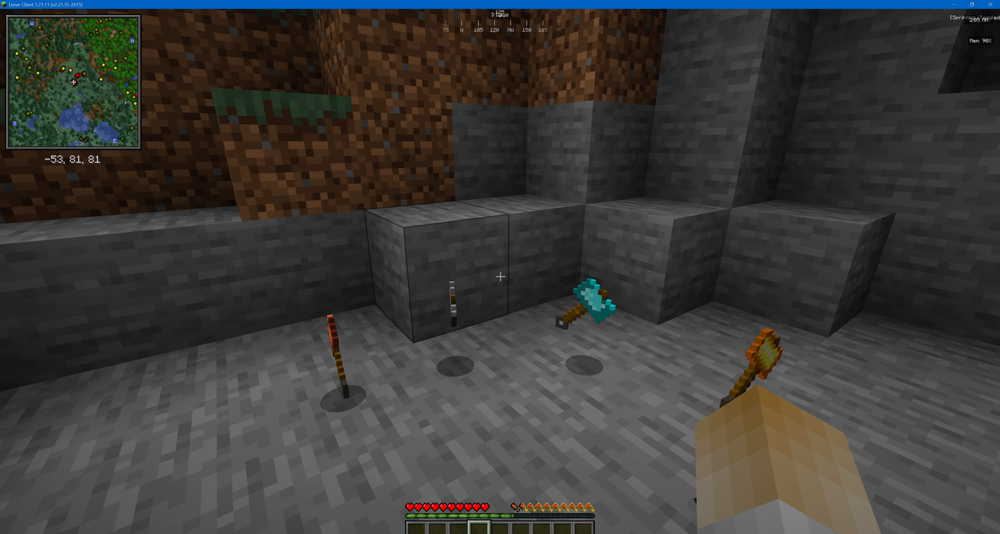
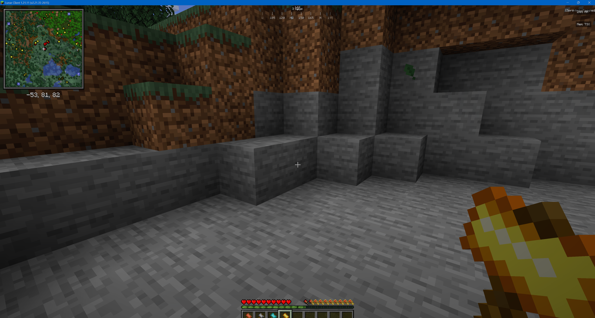

v0.2.0
Balancing und QoL
- Feinabstimmung von Schaden, Haltbarkeit und Mining-Speed
- Optionale Cooldowns fuer Blitz- und AOE-Effekte
- Bessere Ingame-Beschreibungen fuer alle Hammer
Fabric 1.21.11 Mod
Das Ultimate-Werkzeug fuer Mining und Kampf. Vom Kupferhammer bis zum Obsidian-Blitzhammer.
Nach dem Download die Datei mc_hammer-*.jar in den mods-Ordner legen:
%APPDATA%/.minecraft/modsDetails und Assets findest du auf der Release-Seite.
v0.2.0
v0.3.0
v1.0.0
Du brauchst Minecraft 1.21.11 mit Fabric Loader. Auf Client und Server muessen Version und Mod-Stand identisch sein.
Ja, empfohlen. Installiere auf Client und Server dieselbe Fabric API-Version, damit es keine Join-Fehler gibt.
Server stoppen, Software auf Fabric stellen, danach im Mods-Bereich den Mod und Fabric API installieren und neu starten.
Ein direkter JAR-Link klappt erst, wenn ein GitHub Release mit JAR-Asset vorhanden ist. Nutze bis dahin die Release-Seite.
Gameplay und Ingame-Eindruecke:

